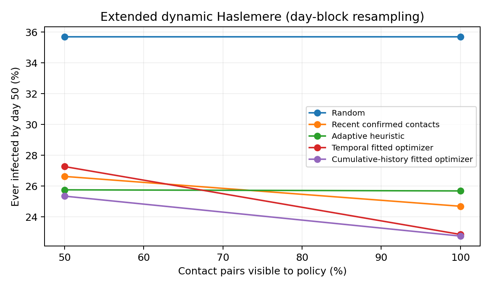

Hidden states
A person can be infectious without a diagnosis. Testing decisions depend on uncertain estimates, not known infection states.
STAT 236 · FALL 2026 · GROUP PROJECT
A limited testing budget. Hidden infections. Missing contacts. We investigate when network-aware screening helps control simulated epidemics—and when the information it relies on starts to fail.
A statistical simulation study · Not a real-world disease forecast
Testing an infectious person before they meet others can prevent new cases. But we rarely know who is infected—and our map of their contacts is far from complete.
We ask: How do community structure, missing edges, and contact timing change which testing strategy works best?
A person can be infectious without a diagnosis. Testing decisions depend on uncertain estimates, not known infection states.
Transmission follows the complete simulated contact network; decision-makers see only a subset of its links.
With only a few tests available, every choice has an opportunity cost: whom do we test first?
Meet 30 little people in three communities. Press play to watch contacts, hidden infections, testing, and isolation change their story. Then switch what the testing policy can see.
Important: this is a teaching animation, not one of our reported experiments. It uses a small 30-person toy graph, simplified transmissions and perfect test detection, and a contact-aware illustrative heuristic. We do not use this animated run to claim a strategy is superior. The research results below use the full 50-day SBM and Haslemere experiments from the paper.
We combine an approximate Bayesian filter, a simulation-trained infection-risk model, and a simple budget-constrained selection rule.
Use past contact information, even when some edges are missing.
Approximate hidden infection probabilities, then improve them with fitted logistic regression.
Estimate how many immediate transmissions detecting each person might prevent.
Test the highest-scoring eligible people, up to the available budget.
Expected benefit ≈ P(hidden infection) × test sensitivity × expected susceptible contacts at risk
This prioritizes immediate expected prevention—not the full 50-day epidemic trajectory.Explore the actual simulation averages across community strengths and levels of contact visibility.
We hide edges from the policy, not from disease transmission.
180 people · 3 equal communities · expected degree 8 · 20 tests/day
Fraction of true contact edges observed by the testing policy →
Fitted logistic risk estimates improve held-out AUC from 0.691 to 0.736 over the mean-field filter, but predictive gains alone cannot guarantee superior epidemic control.
For weak community structure with complete observation, the fitted optimizer has fewer mean infections than the heuristic. Its paired 95% MC interval for the difference includes zero.
For that same network setting, observing only 25% of edges reverses the point-estimate ordering. This does not establish a systematic difference in robustness.
Across six community-strength ratios, the fitted optimizer's relative advantage over the heuristic shows no clear monotonic pattern. Paired 95% Monte Carlo intervals include zero.
View original research figure ↗
We use the measured Haslemere proximity dataset to build a time-varying contact network. After the first three recorded days, entire observed daytime sequences are independently resampled to extend the study horizon.
Only Days 1–3 are measured. Days 4–50 reuse a randomly chosen whole-day contact sequence from those three days; they are not newly observed contacts. Every infection in this analysis is simulated.
Both fitted policies use the same infection-risk model and testing budget. One weights recent contacts more heavily; the other uses cumulative past contact history.
Paired 95% MC interval: [−1.52, +1.73] pp
No demonstrated advantage from recency weighting.

With only 50% of contact pairs visible, the recency-weighted fitted policy rises from 22.87% to 27.27% ever infected—a 4.41 percentage-point increase using unrounded paired results.
The experiments are conditional on the assumed resampling and epidemic models; they are not forecasts of Haslemere's real disease outcomes.
Network-aware optimization can reduce simulated infections relative to untargeted testing. But an advanced scoring model isn't automatically better than a simpler adaptive rule when contacts are missing.
Read the full 19-page reportEstimating hidden infections more accurately doesn't necessarily select the people whose tests prevent the most transmission.
Data gaps often reduce simulated control performance, but neither compared policy is consistently the most robust.
Under the day-block contact extension, recency-weighting does not outperform cumulative-history weighting decisively.
Interpretation boundary. Haslemere proximity observations cover a selected sample and just three measured days. Future contacts are resampled; disease states, testing outcomes, and transmission parameters are simulated or assumed. The one-step optimizer ignores downstream cascades. These results are methodological comparisons, not public-health policy recommendations.